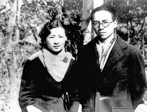
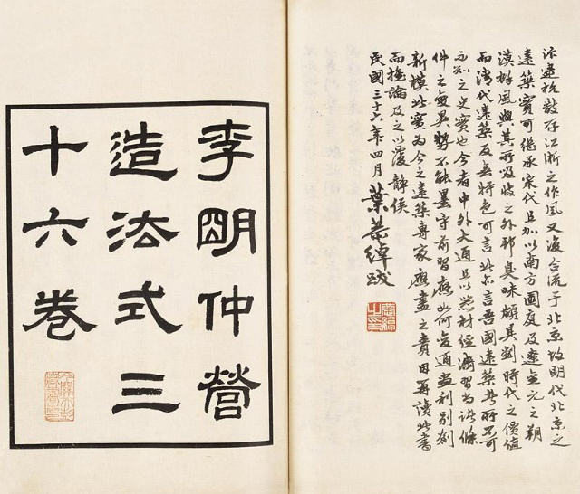
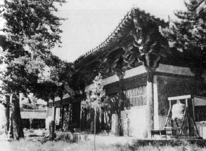
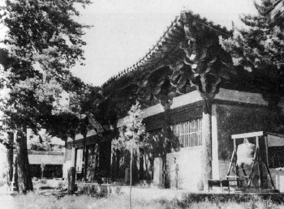

营造学社成立背景
佛光寺东大殿是我国古建筑类文化遗产最珍贵的一处，
其自身的文物价值与其传奇的发现过程，对推动中国建筑
史学的发展具有重大意义。中国建筑史学开端，发轫于
一本书：《营造法式》，
一个机构：中国营造学社，
一位学者：梁思成
。一本书
《营造法式》是宋崇宁二年，由北宋官方颁布的一部建筑设计、施工的规范书，是时任将作监的李诫奉敕修编的。李诫在两浙工匠喻皓所著《木经》的基础上进行编纂，成书于元符三年。《营造法式》是我国古代最完整的建筑技术书籍，标志着中国古代建筑已经发展到了较为成熟的阶段.
1919年，前北洋政府交通总长、内务总长朱启钤先生在江南图书馆发现了宋代李诫的《营造法式》丁氏抄本，便委托商务印书馆以石印本印行。
1925年陶湘以此丁本《营造法式》与《四库全书》文渊、文溯、文津各本校勘后，按宋残叶版式和大小刻版印行，世称为仿宋陶湘本，即陶本。
一个机构
1930年，朱启钤成立了“中国营造学社”，聘请从美国学成归来的梁思成先生担任法式组主任。梁思成先生将中国文献学与西方建筑测绘调查学相结合，初步形成了中国建筑史学研究方法。学社从事古代建筑实例的调查、研究和测绘，以及文献资料搜集、整理和研究，编辑出版《中国营造学社汇刊》。营造学社不仅在学术上为后人留下了珍贵的资料，同时也培养了一大批优秀的建筑专业人才。梁思成、林徽因、刘敦桢、罗哲文等许多建筑学界的重量级人物均出自中国营造学社门下。
一位学者
19世纪末20世纪初，由于西方文化的涌入，中国的传统文化体系受到了巨大的冲击。梁思成先生就成长于这样的历史环境下，其父亲——著名学者梁启超先生，正是那一代探索中国文化发展的学者代表。梁启超先生始终坚持“中学为体，西学为用”，强调中西文化的融会贯通。
1924年梁思成先生与另一位建筑史学先驱，也正是其未来的妻子——
共同赴美国留学，他们在宾西法尼亚大学接受了完整的西方建筑学、建筑史与艺术史的教育。
1925年，梁启超先生将重新印制的《营造法式》寄送给梁思成。虽然年轻的梁思成此时完全看不懂，但这本装帧精美、图文并茂的书依然引起了他极大的兴趣。也正是这本如“天书”一般的《营造法式》，促使梁思成先生选定了一生奋斗的方向
——中国建筑史学研究。
中国古建筑考察历程
1931年，日本帝国主义分子悍然发动震惊中外的九一八事变。日本人除了军事上的侵略，在文化上更妄图以汉学正统自居。当时日本学者甚至宣称：中国已经没有了唐代木构建筑，唐代木构建筑都保存在日本奈良。这种狂妄自大的态度，深深刺痛了梁思成先生这一辈学者。梁先生抱着在祖国辽阔的土地上一定还留存有唐代木构遗存的坚强信念，展开了调查研究工作。
佛光寺考察历程
自从从加入营造学社开始，梁思成和他的同事们就开始了对中国古建筑的考察，考察足迹遍布中国大江南北：
1932年春调查蓟县独乐寺、 河北宝坻广济寺; 1933年调查正定隆兴寺、 大同云冈石窟、善化寺、应县木塔；1934年调查晋汾古建、浙江古建筑；1935年调查安阳古建筑、苏州古建筑；1936年调査陕西古建筑……
蓟县独乐寺、正定隆兴寺、大同华严寺、善化寺、应县木塔都是辽宋时期的木构建筑，价值都很高，每次调查都让这些学者们兴奋不已，但这些都和唐代建筑有一点距离。梁思成先生和他的同事们已经做好了充分的准备工作，距离他们梦寐以求的唐代建筑，仅仅欠缺一点运气和一个机缘.
1926年，法国学者伯希和出版一书
其61窟有一幅五代时期绘制的五台山全景壁画，这是一幅绘有五台山自然地理和佛教寺院、瑞相灵迹的佛画，其中寺庙林立、宝塔穿云。
山西五台山是由五座山峰环抱起来的，当中是盆地，有一个镇叫台怀。五峰以内称为“台内”，以外称“台外”。台怀是五台山的中心，附近寺刹林立，香火极盛。殿塔佛像都勤经修建。其中许多金碧辉煌，用来炫耀香客的寺院，都是近代的贵官富贾所布施重修的。千余年来所谓：文殊菩萨道场的地方，竟然很少明清以前的殿宇存在。
台外的情形，就与台内很不相同了。因为地占外围，寺刹散远，交通不便，所以祈福进香的人，足迹很少到台外。因为香火冷落，寺僧贫苦，所以修装困难，就比较有利于古建筑之保存。
1937年6月，我同中国营造学社调查队莫宗江、林徽因、纪玉堂四人，到山西这座名山，探索古刹。到五台县城后，我们不入台怀，折而北行，径趋南台外围。我们骑驮骡入山，在陡峻的路上，迂回着走，沿倚着岸边，崎岖危险，下面可以俯瞰田陇。田陇随山势弯转，林木错绮；近山婉婉在眼前，远处则山峦环护，形式甚是壮伟，旅途十分僻静，风景很幽丽。到了黄昏时分，我们到达豆村附近的佛光真容禅寺，瞻仰大殿；咨嗟惊喜，我们一向所抱着的国内殿宇必有唐构的信念，一旦在此得到一个实证了。
 

唐乾符经幢
唐乾符四年（877）经幢位于山门内，文殊殿前，青石质，高4.9米，是佛光寺内现存的两座唐代经幢之一。经幢设束腰八角须弥座，下涩之上是宝装覆莲瓣，每面二瓣。束腰上八方刻有手持不同乐器正在演奏的乐伎8人。其上为仰莲两层，平面为圆形。须弥座之上立幢身，平面八角形，上刻《佛顶尊胜陀罗尼经》及立幢人姓名。幢身之上为宝盖，表面镌流苏，八角出狮头，口衔璎珞。宝盖之上为八角形矮墩，其上为八角攒尖形屋盖。翼角及翘起显著。屋盖之上为山花蕉叶八瓣，其中四瓣较大，四瓣较小，山花蕉叶之内是覆钵，其上置仰莲宝珠。幢尾刻建造年代和建造者姓名。
文殊殿简介
文殊殿建于金天会十五年（公元1137年），元至正十一年（公元1351年）重修。1953年又进行了补修。
“文殊殿在寺内南侧，在佛光诸殿中，其年代之古及规模之大仅次于佛殿。殿广七间，深四间，单檐悬山顶，檐下用单杪单昂五铺作的斗栱。正面的中三间开门，两梢间开直棂窗，尽间砌着砖墙。山面和后面也全砌砖墙，只在后面当心间开一道门。正殿七间，而一七间的大殿做配殿，在佛寺中是颇为少见的。”（梁思成文集第四卷
殿顶脊中琉璃宝刹，是元至正十一年（1351年）烧造，形制秀丽，色泽浑厚。大殿梁架采用了硕大的木材，两架之间用斜木相撑，构成“人字柁架”，殿内立柱较一般构架减少八根，形成了巨大的供奉空间。殿内佛坛上有七尊塑像，中为骑青狮的文殊，两旁为胁侍菩萨。殿内两山墙及后墙上绘有五百罗汉壁画，是明宣德年间的作品。
文殊殿是我国早期建筑遗存中不可多得的实例，尤其是文殊殿采用的大跨度人字柁架更是早期建筑遗存中的孤例。
下一章
環繞東大殿